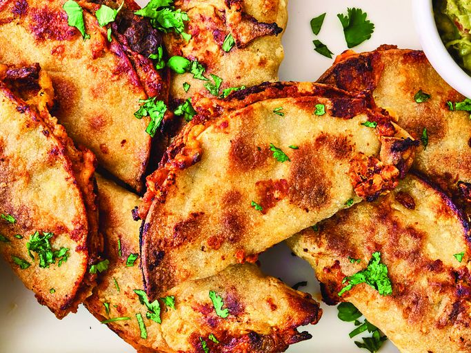

Home
Pan Tacos

Description
Quick pan tacos with seasoned ground meat (or veggies), sautéed onions and
peppers, warm tortillas, and your favorite toppings like cheese, salsa,
and cilantro. Ready in under 20 minutes!
Ingredients
- Ground beef
- Onion
- Bell peppers
- Taco seasoning
- Olive oil
- Tortillas
-
Toppings: shredded cheese, salsa, sour cream, cilantro, lime wedges
Steps
- Heat olive oil in a skillet over medium-high heat.
-
Add chopped onion and bell peppers; sauté until softened (about 4-5
minutes).
-
Add ground beef and cook until browned, breaking it apart with a
spatula.
-
Sprinkle taco seasoning over the meat mixture; add a splash of water if
needed. Stir well and cook for another 2-3 minutes.
- Warm tortillas in a separate pan or microwave.
-
Fill tortillas with the meat mixture and top with cheese, salsa, sour
cream, cilantro, and a squeeze of lime if desired.
- Serve immediately.